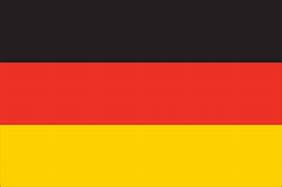
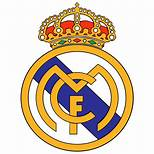
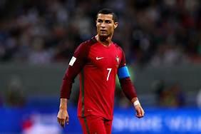

Since I was five years old, I've had a passion for football. Football is the most popular sport in the world, and it is played in many countries. In my high school, I was selected to be a member of the football team representing my school and we won third place in the school competition. I played defender in that competition.
Country
There are several countries that I enjoy watching play football, but the one that I enjoy seeing the most is German. Their players did not play football the way other countries do; they were not greedy for points, they used tactic when the opposition received the ball, and they scored by passing to each other rather than soloing the ball. This is how I truly define football. Passing, tactic, and scoring, among other things. This is why, when it comes to football, I choose Germany as my favourite country.
Club
There are many clubs that are enjoyable to be watched to like Real Madrid, Barcelona, Liverpool and more. But the one that I enjoy watching the most is Real Madrid. Their players consists of the best players of the world like Marcelo, Cristiano Ronaldo, Ramos, Bale, and more. Real Madrid won the most European Cups in Champions League, with 13 titles including a three-year winning streak from 2015 to 2018. This facts shows to the entire world who the reigning football club is.
Player
My favourite football player is Cristiano Ronaldo. He is a Portuguese professional footballer who captains the Portugal national team and plays forward for Premier League club Manchester United. Ronaldo has won five Ballon d'Or trophies and four European Golden Shoes, the most by a European player. He is largely recognised as the top player in the world and widely regarded as one of the greatest players of all time. He is not only good in football but also has a positive personality that includes traits such as kindness, hard effort, and passion.
Here are some of the great moments of videos football.